Next:
Term frequency and weighting
Up:
Parametric and zone indexes
Previous:
Learning weights
Contents
Index
The optimal weight g
We begin by noting that for any training example 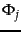 for which
 and
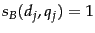, the score computed by Equation 14 is 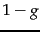. In similar fashion, we may write down the score computed by Equation 14 for the three other possible combinations of
and
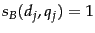, the score computed by Equation 14 is 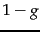. In similar fashion, we may write down the score computed by Equation 14 for the three other possible combinations of  and 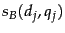; this is summarized in Figure 6.6 .
and 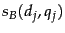; this is summarized in Figure 6.6 .
Figure 6.6: The four possible combinations of
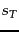 and
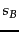.
| 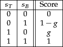 |
Let 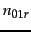 (respectively,  ) denote the number of training examples for which
and
and the editorial judgment is Relevant (respectively, Non-relevant). Then the contribution to the total error in Equation 17 from training examples for which
and
is
) denote the number of training examples for which
and
and the editorial judgment is Relevant (respectively, Non-relevant). Then the contribution to the total error in Equation 17 from training examples for which
and
is
![\begin{displaymath}[1-(1-g)]^2n_{01r} + [0-(1-g)]^2n_{01n}.
\end{displaymath}](img393.png) |
(18) |
By writing in similar fashion the error contributions from training examples of the other three combinations of values for
and
(and extending the notation in the obvious manner), the total error corresponding to Equation
17 is
By differentiating Equation 19 with respect to 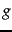 and setting the result to zero, it follows that the optimal value of is
Exercises.
- When using weighted zone scoring, is it necessary for all zones to use the same Boolean match function?
- In Example 6.1.1 above with weights
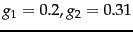 and
 , what are all the distinct score values a document may get?
, what are all the distinct score values a document may get?
- Rewrite the algorithm in Figure 6.4 to the case of more than two query terms.
- Write pseudocode for the function WeightedZone for the case of two postings lists in Figure 6.4 .
- Apply Equation 20 to the sample training set in Figure 6.5 to estimate the best value of for this sample.
- For the value of estimated in Exercise 6.1.3, compute the weighted zone score for each (query, document) example. How do these scores relate to the relevance judgments in Figure 6.5 (quantized to 0/1)?
- Why does the expression for in (20) not involve training examples in which 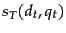 and
 have the same value?
have the same value?
Next:
Term frequency and weighting
Up:
Parametric and zone indexes
Previous:
Learning weights
Contents
Index
© 2008 Cambridge University Press
This is an automatically generated page. In case of formatting errors you may want to look at the PDF edition of the book.
2009-04-07